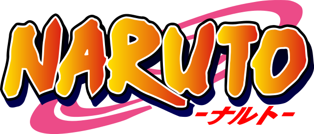

Les meilleurs animés de tous les temps
1- Naruto
ナルト

L'histoire commence pendant l'adolescence de Naruto, vers ses douze ans. Orphelin cancre et grand farceur, il fait toutes les bêtises possibles pour se faire remarquer. Son rêve : devenir le meilleur Hokage afin d'être reconnu par les habitants de son village. En effet, le démon renard à neuf queues scellé en lui a attisé la crainte et le mépris des autres villageois, qui, avec le temps, ne font plus de différence entre Kyûbi et Naruto. Malgré cela, Naruto s'entraîne dur afin de devenir genin, le premier niveau chez les ninjas. Après avoir raté l'examen genin 3 fois, il arrive finalement à recevoir son bandeau frontal de Konoha. Il est alors inclus dans une équipe de trois apprentis ninjas, avec Sakura Haruno et le talentueux Sasuke Uchiwa qui veut venger les personnes chères à ses yeux, en tuant son frère Itachi Uchiha. Peu après, ils rencontrent leur jōnin (ninja de classe supérieure), celui qui s'occupera de leur formation : le mystérieux Kakashi Hatake.
Au début craint et méprisé par ses pairs, Naruto va peu à peu monter en puissance et gagner le respect et l'affection des villageois grâce, notamment, aux combats dantesques qu'il remportera face aux ennemis les plus puissants de Konoha.
2- One piece
ワンピース

L'histoire de One Piece se déroule dans un monde fictif dominé par les océans, où certains pirates aspirent à une ère de liberté et d'aventure connue comme « l'âge d'or de la piraterie ». Cette époque fut inaugurée à la suite des derniers mots prononcés par le roi des pirates, Gol D. Roger, surnommé Gold Roger avant son exécution6. Roger annonce au monde que ses habitants étaient libres de chercher toutes les richesses qu'il avait accumulées durant sa vie entière, le « One Piece7. »
Vingt-deux ans après l'exécution de Roger, l'intérêt pour le One Piece s’effrite. Beaucoup y ont renoncé, certains se demandent même s'il existe vraiment. Même si les pirates sont toujours une menace pour les habitants, la Marine est devenue plus efficace pour contrer leurs attaques sur les quatre mers : East Blue, North Blue, West Blue et South Blue. Pourtant, ce changement n'a pas dissuadé Monkey D. Luffy, un jeune garçon, de vouloir devenir le successeur du légendaire Roger. Il va ainsi partir à l’aventure en se donnant comme premier objectif de créer un équipage afin de rejoindre la mer de Grand Line, où la fièvre de la « grande vague de piraterie » continue de sévir, et où de nombreux grands noms de la piraterie sont à la poursuite du One Piece, supposé être sur la dernière île de cette grande mer, Laugh Tale (orthographe voulue par Oda).
Luffy part à l'aventure après sa rencontre avec Shanks le Roux, le capitaine d'un navire de pirates qui a passé un an dans son village et l'a sauvé d'un monstre marin en sacrifiant son bras gauche. Depuis, Luffy porte son chapeau de paille qu'il lui a offert pour marquer la promesse de devenir un grand pirate. Ce chapeau deviendra donc le symbole de son équipage. C'est à cette époque qu'il mange un fruit du démon que détenait Shanks : le fruit du Gum Gum, et qui rend son corps élastique. Les fruits du Démon une fois mangés donnent des capacités spéciales à leur détenteur, qui perd par la même occasion toutes ses forces lorsqu'il est immergé dans l'eau de mer. Luffy et son équipage feront de nombreuses rencontres qui renforceront leur amitié et élargiront leurs équipages. Mais ils devront se confronter aux équipages pirates prônant violence et pouvoirs, ainsi qu'à la Marine et ses soldats, garants de la justice.
3- Demon Slayer
きめつ の やいば

Dans un Japon de l'ère Taishō, Tanjirō est le fils aîné d'une famille de marchands de charbon dont le père est décédé. Pour subvenir aux besoins de celle-ci, il part vendre du charbon de bois en ville. Malgré les difficultés de la vie, ils réussissent à trouver un peu de bonheur dans leur quotidien. Un jour, à cause des rumeurs qui circulent à propos d'un démon (鬼, Oni?) mangeur d'hommes qui traînerait dans les parages la nuit tombée, il est dans l'impossibilité de rentrer chez lui et finit par passer la nuit chez un Bon Samaritain de la ville.
Seulement, tout bascule à son retour lorsqu'il retrouve sa famille massacrée par un démon. Nezuko, l'une de ses petites sœurs, est la seule survivante mais elle a été transformée en démon. Elle attaque initialement Tanjirō, mais elle continue de montrer des signes d'émotions et de pensées humaines, c'est à ce moment qu'intervient un pourfendeur de démons du nom de Giyū Tomioka. Alors qu'il tente d'éliminer Nezuko, Giyū se rend compte du lien qui uni entre le frère et la sœur Kamado, et décide de les laisser en rengainant son sabre. Sur les conseils de Giyū, Tanjirō se rend chez son maître Sakonji Urokodaki pour s'entraîner à devenir un pourfendeur de démons, afin d'entamer son périple pour trouver un antidote pouvant rendre à nouveau humaine sa petite sœur..
4- Hunter x Hunter
ハンターハンター
Gon Freecss a douze ans, et rêve de devenir hunter (chasseur en anglais). Les hunters sont des citoyens d'élite autorisés à faire quasiment tout ce qu'ils souhaitent sur simple présentation de leur carte de membre : ils peuvent ainsi acquérir gratuitement tout objet à la vente sur les fonds de l'association; réquisitionner tout véhicule, logement et outil pour leur travail; et sont de facto habilités à exercer tous les métiers du monde, pouvant tout aussi bien devenir chasseurs de prime, chefs-cuisinier, archéologues, zoologues, justiciers ou consultants dans divers domaines. Son père, Ging Freecss, qu'il ne connaît pas directement, est considéré comme un des plus grands hunters de son temps. C'est aussi pour le retrouver que Gon veut devenir hunter.
Cependant l'examen de hunter, qui a lieu chaque année, est extrêmement difficile et périlleux. On dit qu'un candidat sur 10 000 arrive sur le lieu des épreuves et qu'un seul candidat tous les trois ans devient hunter à sa première tentative. Durant les épreuves, il n'est pas rare d'être blessé, voire tué par des monstres, des pièges ou même d'autres concurrents…
Au cours de cet examen, Gon va rencontrer différents personnages, aussi bien amis qu'ennemis : Kurapika, dont le seul objectif est de venger son clan, le clan Kuruta, assassiné par la Brigade fantôme et tenter de récupérer les yeux de son clan, les pupilles écarlates ; Léolio, dont le but avoué est d'acquérir de l'argent pour financer ses études de médecine ; Kirua, qui a le même âge que Gon, fils d'une famille d'assassin d'élite, la famille Zoldik, ne souhaitant pas poursuivre la voie de sa famille, qui participe à cet examen par simple amour du défi ; Hisoka, dont la grande passion est le combat contre des guerriers très puissants ; ainsi que beaucoup d'autres…
La force de Gon n'est pas que physique : son charisme, sa pureté, sa gentillesse, sa grande générosité et surtout son incroyable capacité à attirer la sympathie l'aident souvent à se sortir des situations les plus périlleuses.
5- Dragon Ball Z
ドラゴンボールZ

Un élément unificateur de l'intrigue qui accompagne la progression de Goku en tant qu'artiste martial est sa recherche des Dragon Balls éponymes. Ces boules magiques sont une composante de l'univers narratif, mais ne sont toutefois pas au centre de toutes les intrigues (leur importance tend à décroître au fil du récit, et plus encore l'élément de surprise associé au souhait qui sera formulé, puisqu'elles finissent par simplement faire office de « bouton reset » en ressuscitant les personnages morts au cours de la bataille précédente). Les Dragon Balls sont sept sphères de cristal de couleur orange et portant chacune de une à sept étoiles en guise de numérotation, dispersées à travers le monde. Une fois réunies, elles permettent d'invoquer Shenron, un dragon immatériel ayant le pouvoir d'exaucer n'importe quel souhait. Une fois le souhait exaucé, les Dragon Balls sont à nouveau dispersés dans le monde entier et deviennent inertes pendant un an. Autrefois, il fallait des générations pour parcourir le monde et rassembler les Dragon Balls. Au début de l'histoire, cependant, une jeune fille géniale de 16 ans, nommée Bulma, invente un radar spécial pour détecter les Dragon Balls, ce qui rend la quête beaucoup moins pénible.
6- Attaque des titans
進撃の巨人
Plus de cent ans avant le début de l’histoire, des créatures géantes humanoïdes nommées Titans (巨人, Kyojin?) sont subitement apparues et ont presque anéanti l’humanité. Ces créatures géantes font habituellement entre trois et quinze mètres de haut, avec quelques exceptions comme le Titan colossal qui en mesure soixante1. Il semblerait que les Titans dévorent les humains par instinct et uniquement pour les tuer : en effet, ils ne possèdent pas de système digestif et n’ont pas besoin de se nourrir car ils puisent leur énergie dans la lumière du soleil. Néanmoins, certains sont actifs durant la nuit. Les Titans ont la peau dure, des capacités régénératrices et ne peuvent être tués que par une incision profonde à la base de la nuque2.
Pour se protéger, l’humanité vit entourée par un système de trois murs concentriques de cinquante mètres de haut, distants les uns des autres d’une centaine de kilomètres3. Le mur extérieur est le Mur Maria (ウォール・マリア, Wōru Maria?), l’intermédiaire est le Mur Rose (ウォール・ローゼ, Wōru Rōze?) et le central est le Mur Sina (ウォール・シーナ, Wōru Shīna?). Afin de pouvoir se défendre plus facilement et efficacement, ainsi que pour réduire les coûts nécessaires à la défense, des bastions ont été fabriqués. Ils permettent aux membres d’une garnison d’attirer les Titans à un même endroit du mur afin de les attaquer à l’aide de canons4,5. Grâce au relief et l’altitude grandissants à l’approche du mur central, de nombreux cours d’eau irriguent la zone dans son intégralité, ce qui permet à l’humanité de ne manquer ni de ressources minérales ni de gaz naturel. Ces trois murs sont considérés comme sacrés par certains cultes, considérés comme trois déesses qui protègent les humains.
7- The Promised Neverland
約束のネバーランド
Emma et ses frères et sœurs, tous orphelins, ont été placés dans un établissement spécialisé lorsqu'ils étaient tout jeunes. Bien que leur liberté soit limitée et que les règles soient parfois un peu strictes, les enfants mènent une vie heureuse à Grace Field House, et la femme qu'ils nomment « Maman » (de son vrai nom Isabella) s'occupe d'eux et leur offre tout l'amour qu'une mère pourrait offrir à ses enfants. Mais un soir, après le départ d'une des leurs, Emma et Norman découvrent que les enfants de cet orphelinat sont livrés à des démons, avec le consentement de « Maman ». Pour survivre, ils devront faire preuve d'ingéniosité et tenter de s'échapper.
8- Jujutsu Kaisen
呪術廻戦
L'intrigue de Jujutsu Kaisen se déroule dans un monde où des fléaux sont créés à partir des émotions négatives des Humains. Ainsi, pour protéger les lieux avec une forte concentration de ces émotions comme les écoles ou les hôpitaux, ces infrastructures possèdent une relique, réceptacle d'un fléau, car l'on ne peut lutter contre les fléaux qu'avec un fléau plus puissant. Ceux-ci sont invisibles aux yeux des humains sauf pour une poignée de personnes, par exemple les exorcistes. Le métier d'exorciste consiste à éliminer les fléaux et ainsi protéger le peuple de ces derniers, mais cela n'est pas sans risques, car ces fléaux peuvent être plus ou moins puissants.
Yūji Itadori, un lycéen lambda doté d'une force surhumaine et membre du club de spiritisme, trouve un jour dans l'abri météo de son lycée une relique de rang S protégée par un sceau. Sasaki et Iguchi, ses amis du club, restent le soir au lycée pour inspecter la relique tandis que Yūji est à l'hôpital où son grand-père vient tout juste de décéder. La relique qu'ils ont trouvée est un des doigts de Ryōmen Sukuna, le plus puissant des fléaux. Ainsi, en libérant le doigt du sceau, Sasaki et Iguchi se font attaquer par de nombreux fléaux. Yūji, apprenant l'existence de ces derniers, retourne le plus vite possible au lycée en compagnie d'un exorciste pour sauver ses amis des griffes des fléaux. Lors d'un affrontement contre l'un d'eux, il décide d'ingurgiter la relique pour devenir plus puissant et ainsi sauver ses amis.
En avalant cette relique Ryōmen Sukuna prend possession du corps de Yūji, mais cela n'est que de courte durée car ce dernier arrive étonnamment à reprendre le contrôle sur Sukuna. Les exorcistes décident dans un premier temps de condamner à mort Yūji mais, grâce à l'intervention du plus puissant des exorcistes, Satoru Gojo, ils décident finalement d'utiliser Yūji comme réceptacle de Sukuna et de le tuer le jour où il aura avalé tous ses doigts. En effet, cela est la seule façon d'éliminer Sukuna une bonne fois pour toutes.
De là, démarre une aventure qui mènera Yūji à devenir un puissant exorciste pour sauver les innocents d'une mort indigne et d'éliminer les fléaux de ce monde pour préserver l'humanité.
Mon autre site parlant de Hunter X Hunter